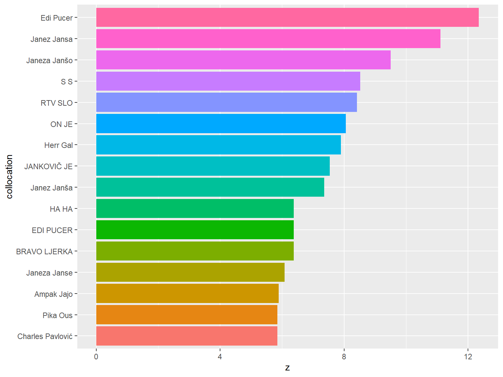

Tole poglavje se opira na naslednje spletno gradivo:
Schweinberger, Martin. 2022. Analyzing Co-Occurrences and Collocations in R. Brisbane: The University of Queensland. url: https://slcladal.github.io/coll.html (Version 2022.12.31).
in na
še eno spletno gradivo !!!
5.2.1 Preberi in združi
Podatkovne nize smo pridobili s pomočjo YouTube Data Tools (https://tools.digitalmethods.net/netvizz/youtube/). Orodje je sprogramiral “Bernhard Rieder […] an associate professor in New Media and Digital Culture at the University of Amsterdam and a researcher with the Digital Methods Initiative.” (http://thepoliticsofsystems.net/about/).
Dva video posnetka na portalu YouTube sta povezana z znanima slovenskima politikoma, Zoranom Jankovićem in Janezom Janšo. Gledalci oddaje 24 ur so po ogledu oddali svoje pripombe. V tretjem video posnetku (file = 2) je novinarka spraševala ljudi, kaj delajo za božič. Gledalci so po ogledu oddali svoje pripombe.
Show the code
gpath <-list.files(path ="data/youtube/",pattern ="_comments.csv", full.names =TRUE)comments <-map_dfr(gpath, read_csv, .id ="file") %>%# dodelimo vsaki datoteki prepoznavno ime# namesto ifelse() uporabljamo case_when()mutate(file =case_when( file =="1"~"24ur_Jansa", file =="2"~"24ur_bozic", file =="3"~"24ur_Jankovic",TRUE~"other" )) %>%# korrekture presledkovmutate(text =str_squish(text),text =str_replace_all(text, "\\.\\.", " ... "), # razmak med piko in drugo besedotext =str_replace_all(text, pattern ="(.+[a-z])(\\.)([A-Z].+)", replacement ="\\1\\2 \\3"))names(comments)
V nadaljevanju bomo uporabljali programske funkcije knjižnic quanteda in tidytext. Zato bomo ustvarili vzporedna korpusa - eden bo v obliki tabele (tidy), drugi pa v obliki seznama besedilnih enot (quanteda corpus). Besedilna enota bo poved, ki je za iskanje kolokacij v besedilih primerna enota.
Show the code
library(quanteda)# iz gornje tabele s prispevki ustvari korpusgcorp <-corpus(comments %>%mutate(files = file), text_field ="text", docid_field ="files",unique_docnames = F)# naredi seznam besednih oblikgtoks <-tokens(gcorp)# odstani nezaželene besedne oblikegtoks1 <-tokens_remove(gtoks, pattern = stop_sl, padding =TRUE)# ustvari korpus, ki vsebuje povedi kot osnovno enotogcorp_sent <-corpus_reshape(gcorp, to ="sentences")
V prejšnjem poglavju smo že videli, da lahko tabelo z besedili pretvorimo v korpus knjižnice quanteda. Mogoča je tudi obratna pot, tj. da korpus knjižnice quanteda pretvorimo v obliko tabele, ki omogoča uporabo programskih funkcij knjižnic tidyverse in tidytext (tidy format):
Kolokacije so izrazi, ki se skupaj pojavljajo (statistično značilno) pogosteje, kot bi pričakovali po naključju. Tipičen primer kolokacije v angleščini je Merry Christmas ali v slovenščini Dober dan, ker se posamezni besedi pogosteje pojavljata skupaj, kot bi pričakovali, če bi bili besedi samo naključno nanizani.
N-grami so sorodni kolokacijam, saj predstavljajo besede, ki se pojavljajo skupaj (bi-grami sta dve besedi, ki se pojavljata skupaj, tri-grami so tri besede in tako naprej). Sestavljanje n-gramskih seznamov je zelo enostavno.
Za sestavljanje kontinengčnih tabel želimo najprej določiti, koliko je posameznih besed v gradivu.
Show the code
words <- gcorp_sent_tidy %>%unnest_tokens(word, text, "words")# count words and remove numbers (if still present)word_count <- words %>%count(word, sort = T, name ="Freq_word") %>%filter(!str_detect(word, "[\\d]+"))# Number of wordsN <-nrow(word_count)
Nadaljujemo lahko kar s preštevanjem ngramov, in sicer bigramov.
Show the code
# ngram tokenizengrams <- gcorp_sent_tidy %>%unnest_tokens(ngram, text, "ngrams", n =2)# count ngrams and remove numbersngram_count <- ngrams %>%count(ngram, sort = T, name ="Freq_ngram") %>%filter(!str_detect(ngram, "[\\d]+"))# Number of ngramsNG <-nrow(ngram_count)
Med zgoraj navedenimi ngrami je precej nezanimivih. Zato bomo izločili ngrame, ki vsebujejo nezaželene besede (stopwords).
Prvi (daljši) način: stolpec ngram razdelimo na dva stolpca, izločimo nezaželene besede v obeh stolpcih, potem pa preštejemo preostale ngrame.
V kontingenčno tabelo želimo zajeti vse besede. Sestavimo dve pomožni tabeli, ki ju združimo v končno kontingenčno tabelo.
Show the code
ngram_count1 <- ngrams %>%count(ngram, sort = T, name ="Freq_ngram") %>%filter(!str_detect(ngram, "[\\d]+")) %>%# for joining we need a 'word' column for the 1st wordseparate(ngram, into =c("word", "word2"), sep =" ", remove = F)ngram_count2 <- ngrams %>%count(ngram, sort = T, name ="Freq_ngram") %>%filter(!str_detect(ngram, "[\\d]+")) %>%# for joining we need a 'word' column for the 2nd wordseparate(ngram, into =c("word1", "word"), sep =" ", remove = F)
Pogostnost izraza (term frequency) pogosto normaliziramo; pogostnost besedne oblike delimo z dolžino besedila, torej z vsoto vseh pojavnic v besedilu: TF = Freq(term) / sum(terms in doc).
Show the code
ngram_freqs <- ngram_count1 %>%# join the 1st word countleft_join(word_count, by ="word") %>%rename(word1 = word, Freq_word1 = Freq_word, word = word2) %>%# join the 2nd word countleft_join(word_count, by ="word") %>%rename(word2 = word, Freq_word2 = Freq_word) %>%mutate(AllFreq =sum(Freq_ngram)) %>%group_by(word1) %>%mutate(TermFreq =sum(Freq_ngram)) %>%ungroup() %>%group_by(word2) %>%mutate(CoocFreq =sum(Freq_ngram))ngram_freqs %>%ungroup() %>%# the first word is the preposition "in"filter(word1 =="in") %>%summarise(TermFreq =sum(Freq_ngram))
# A tibble: 1 × 1
TermFreq
<int>
1 400
Show the code
ngram_freqs %>%# still being grouped by word2 !# word1 = preposition "in"filter(word1 =="in") %>%summarise(TermFreq =sum(Freq_ngram)) %>% rmarkdown::paged_table()
Kontingenčna tabela, ki vsebuje opazovane in pričakovane vrednosti pogostnosti ngramov in izračunane mere asociacije association measures.
“The association measures presented in this section belong to the degree of association group. They are maximum-likelihood estimates for various coefficients of association strength (cf. Section 1). As such, all the measures are subject to large sampling errors, especially for low-frequency data. See Section 6 for an attempt to control random variation and avoid inflated association scores.
In Section 1 the two most common coefficients of association strength were introduced, the mu-value μ and the odds ratio θ. Church & Hanks (1990) used the maximum-likelihood estimate for the logarithm of μ as an association measure, which they interpreted (and motivated) as pointwise mutual information (MI), a concept from information theory. This MI measure is particularly prone to overestimate low-frequency data (where E11 is small), but it has nonetheless become a de facto standard in (mainly British) lexicography, often in combination with the t-score measure.”
\[MI = log{\frac{O_{11}}{E_{11}}}\] “In mathematical statistics, the odds ratio θ is often preferred to μ because of its convenient formal properties (cf. Agresti, 1990, Ch. 2). While the mu-value (and thus the MI score) has an intuitive interpretation (namely, that cooccurrences are μ times more likely than by chance), it is difficult to interpret θ (and thus the odds-ratio measure) in such meaningful terms.”
“The best-known coefficient from this group is the Dice coefficient, (aka.”mutual expectation”) whose link function is the harmonic mean (Weisstein, 1999, s.v. Harmonic Mean).”
\[Dice = \frac{2*O_{11}}{R_{1} + C_{1}}\]
“Both the Dice coefficient and the similar Jaccard coefficient have found wide-spread use in the field of information retrieval. The Dice and Jaccard measures are fully equivalent …”
Asymptotic hypothesis tests:
“Asymptotic hypothesis tests address two problems of the exact tests: (i) their numerical complexity and (ii) the difficulty of defining more”extreme” outcomes. Instead of the exact p-value, they use a much simpler equation called a test statistic. … Association measures based on asymptotic hypothesis tests often use the test statistic itself as an association score because of its convenience. When converted into a p-value, the score can directly be compared with those of the exact hypothesis tests. … Note that the logarithm is undefined when there are empty cells (with Oij = 0). For such cells, the entire term evaluates to zero (because 0 * log(0) = 0 by continuous extension) and can simply be omitted from the summation.”
“Since the log-likelihood statistic has an asymptotic χ2 (chi-squared) distribution, its scores can directly be compared with those of the chi-squared measure. … Numerical simulation shows that log-likelihood is much more conservative than chi-squared and gives an excellent approximation to the exact p-values of the Fisher measure. Therefore, it has generally been accepted as an accurate and convenient standard measure for the significance of association.”
5.2.4 N-Grami s knjižnico quanteda
Knjižnica quanteda ponuja odlične in zelo hitre funkcije za pridobivanje ngramov (bigramov, trigramov, …).
Show the code
# extract bigramsBiGrams <- gtoks %>%tokens_remove(stopwords("de")) %>%tokens_select(pattern ="^[A-Z]", valuetype ="regex",# distinguish capital and small letterscase_insensitive =FALSE, padding =TRUE) %>%textstat_collocations(min_count =2, tolower =FALSE)head(BiGrams, 20) %>% rmarkdown::paged_table()
Show the code
BiGrams %>%slice_max(order_by = z, n =15) %>%ungroup() %>%mutate(collocation =fct_reorder(collocation, z)) %>%ggplot(aes(z, collocation, fill = collocation)) +geom_col(show.legend = F)

Bigrame lahko tudi zelo enostavno ekstrahiramo tudi s funkcijo tokens_compound(), ki privzeto sestavi dvobesedne izraze.
Strogo gledano smo pridobili samo n-grame, ne pa tudi kolokacij, saj za kolokacije ni nujno, da se sestavni deli stikajo. V naslednjem odseku želimo v jezikovnem gradivu namesto ngramov prepoznati kolokate.
5.2.5 Kolokacije
V primerjavi z ngrami je bistveno težje prepoznati kolokacije, saj so lahko med sestavnimi deli kolokacije tudi druge besede.
V prvem koraku bomo prispevke gledalcev s knjižnico quanteda razdelili na posamezne stavke.
[1] "Slovenija je od Janeza janše in je njen ati"
[2] "Pa pika"
V naslednjem programskem odstavku bomo ustvarili matriko, ki prikazuje, kako pogosto se je posamezna beseda v jezikovnem gradivu pojavila skupaj z drugo besedo.
Show the code
a_corpus <-corpus(a_sents)# clean corpusa_clean <-tokens(a_corpus, remove_punct = T, remove_symbols = T,remove_numbers = T, remove_url = T) %>%tokens_select(pattern =stopwords("de"), selection ="remove", padding = T)# create document feature matrixa_dfm <-dfm(a_clean) %>%# dfm_tfidf(base = 2, scheme_tf = "prop") %>%# dfm_weight(scheme = "prop") %>% dfm_select(pattern =stopwords("de"), selection ="remove", padding = T)# https://stackoverflow.com/questions/35265748/r-tm-create-a-table-matrix-of-term-association-frequencies-and-add-values-t (Ken Benoit)# convert to a matrix of co-occcurences rather than countsa_dfm <-dfm_weight(a_dfm, "boolean")# Convert to matrixa_sdfm <-convert(a_dfm, to ="matrix")# convert to tm::dtma_dtm <-convert(a_dfm, to ="tm")library(tm)# convert dtm into sparse matrixa_sdtm <- Matrix::sparseMatrix(i = a_dtm$i, j = a_dtm$j, x = a_dtm$v, dims =c(a_dtm$nrow, a_dtm$ncol),dimnames =dimnames(a_dtm))# calculate co-occurrence counts (mix: quanteda + tm + Matrix)coocurrences <-t(a_dfm) %*% a_sdtm# or just with quanteda dfmcoocurrences <-t(a_dfm) %*% a_dfm# convert into dgCMatrixcollocates <-as.matrix(coocurrences)
S funkcijo ncol() lahko preverimo, koliko izrazov (besed ali elementov) je predstavljenih v matriki sopojavljanja (kookurenčni matriki). V našem jezikovnem gradivu: 5829.
S funkcijo summary() lahko preverimo, kako pogosto se izrazi (term) pojavljajo v jezikovnem gradivu. Tako izvemo, da je najmanjša pogostost besede v jezikovnem gradivu (Min.) enaka 1 in največja (Max.) enaka 9664.
Velika razlika med mediano (24,00) in povprečjem (59,45) kaže, da pogostnosti besede niso normalno porazdeljene. To je za jezikovna gradiva povsem običajno.
Show the code
# inspect size of matrixncol(collocates)
[1] 5829
Show the code
summary(rowSums(collocates))
Min. 1st Qu. Median Mean 3rd Qu. Max.
1.00 11.00 24.00 59.45 49.00 9664.00
5.2.6 Upodobitev kolokacij
Sedaj bomo na primeru ene posamezne besede (janez) pokazali, kako se izračuna moč kolokacije za posamezne izraze in kako jo lahko slikovno predstavljamo. Funkcija calculateCoocStatistics prevzemamo iz Schweinberger 2022(glejte tudi WN17?).
Show the code
# load function for co-occurrence calculation## source("https://slcladal.github.io/rscripts/calculateCoocStatistics.R")source("rscripts/calculateCoocStatistics.R")# define termcoocTerm <-"komunizmu"# calculate co-occurrence statistics## using conversion from quanteda dfm to tmcoocs <-calculateCoocStatistics(coocTerm, a_sdtm, measure="MI")coocs <-calculateCoocStatistics(coocTerm, a_sdtm, measure="LOGLIK")coocs <-calculateCoocStatistics(coocTerm, a_sdtm, measure="DICE")## using just quanteda dfm with weight "boolean"coocs <-calculateCoocStatistics(coocTerm, a_dfm, measure="DICE")coocs <-calculateCoocStatistics(coocTerm, a_dfm, measure="MI")coocs <-calculateCoocStatistics(coocTerm, a_dfm, measure="LOGLIK")## using conversion from quanteda dfm to matrix### this takes a lot of time !# coocs <- calculateCoocStatistics(coocTerm, b_sdfm, measure="DICE")# inspect resultscoocs[1:20]
smrt fasizmu imamo zveze
35.295698 17.932015 9.541669 7.965247
boj okupiral naso partija
7.965247 7.965247 7.965247 7.965247
rdeci diktaturo savez omladine
7.965247 7.965247 7.965247 7.965247
pisem posledice of levicarje
6.927523 6.927523 6.927523 6.927523
anarhistkropotkin o and ales
6.927523 5.791549 5.760144 5.466608
Rezultat kaže, da je beseda smrt najmočneje povezana z besedo komunizmu, kar v tem jezikovnem gradivu ne preseneča. Z ozirom na precejšnjo moč povezave bi lahko trdili, da sta besedni obliki smrt komunizmu (podobno kot smrt fašizmu) kolokata in vsaj v prispevkih določenih gledalcev oddaje, ki so napisali te pripombe, celo leksikalizirane.
Dendrogrami (drevesni diagrami) prikazujejo, katere skupne značilnosti imajo podobni elementi. Dendrogrami potemtakem označujejo skupine, saj prikazujejo elemente (besede), ki so podobni ali različni glede na njihovo asociacijsko moč.
Za uporabo te metode moramo najprej ustvariti matriko razdalje iz naše matrike sopojavljanja (kookurenčne matrike).
Da bo diagram še bolj informativen, bomo dodali bomo še vektor besed, ki se redko, včasih ali pogosto ujemajo z izbrano besedo komunizmu (osnova za kategorizacijo je dendrogram, ki je prikazal grozde).
Na podlagi teh vektorjev lahko nato spremenimo ali prilagodimo privzete vrednosti določenih atributov ali parametrov omrežnega objekta (npr. uteži, izgled črt in barve).
Biplot se uporabljajo za prikaz rezultatov korespondenčnih analiz. Uporabni so zlasti takrat, ko nas ne zanima en določen ključni izraz in njegove kolokacije, temveč semantična podobnost številnih izrazov. Besede kot take lahko štejemo za pomensko podobne, če imajo podoben profil sopojavnosti – tj. da se sopojavljajo z istimi besedami.
Biplot nam pokaže, da se komunizumu in smrt vedeta kot Kolokata, saj sta na diagramu razmeroma blizu (čeprav manj kot smrt in fasizmu). Biplot nam tudi pokaže druge kolokate kot npr. rdeči in levicarje.
5.2.7 Statistična značilnost kolokacij
Da bi ugotovili, katere besede se skupaj pojavljajo bistveno pogosteje, kot bi pričakovali po naključju, moramo ugotoviti, ali je njihova pogostost sopojavljanja statistično značilna. To je mogoče storiti za določene ključne izraze ali pa za vse besede v jezikovnem gradivu. V tem primeru se bomo še naprej osredotočali na ključno besedo komunizumu.
Za določitev, kateri izrazi se pomembno ujemajo s ključnim izrazom (komunizmu), uporabljamo večkratne (ali ponavljajoče se) eksaktne Fisherjeve preizkuse, ki zahtevajo naslednje podatke:
a = kolikokrat se coocTerm pojavlja s členom j (tj. O11)
b = kolikokrat se coocTerm pojavlja brez izraza j (tj. O12)
c = Kolikokrat se drugi izrazi pojavljajo s členom j (tj. O21)
d = število izrazov, ki niso coocTerm ali izraz j (tj. O22)
Error in opts_current_table(): if a label (coll_01_15b) is defined, chunk option `tbl-cap` should also be defined.
Sedaj izberemo ključni izraz (komunizmu). Če bi želeli najti vse kolokacije, ki so prisotne v jezikovnem gradivu, bi uporabili celotno gradivo in ne samo podmnožico, ki vsebuje komunizmu.
Nato izračunamo, kateri izrazi se (znatno) pogosteje in redkeje uporabljajo z besedo komunizmu. Določene jezikovne zgradbe privlačijo ali odbijajo določene besede.
Error in opts_current_table(): if a label (coll_01_25f) is defined, chunk option `tbl-cap` should also be defined.
Rezultati kažejo, da se beseda komunizmu v prispevkih gledalcev močno ujema z besedami smrt, nacijonalsocijalizmu in fasizmu. Popravljene vrednosti p kažejo, da so to po Benjamini-Hochbergovem popravku za večkratno/ponavljajoče se testiranje (glejte field2012discovering?) edine pomembne kolokate besede komunizmu v prispevkih gledalcev oddaje. Popravki so potrebni pri izvajanju več testov, ker bi bila sicer zanesljivost rezultata testa močno zmanjšana, saj ponavljajoče testiranje povzroči znatno inflacijo \(\alpha\)-napake. Benjamini-Hochbergov popravek ima prednost pred bolj priljubljenim Bonferronijevim popravkom, ker je manj konzervativen in je zato manj verjetno, da bo povzročil \(\beta\)-napake (glej znova field2012discovering?).
5.3 Sentimentna analiza
Source Code
# Kolokacije in sentiment {#sec-delavnica4}## Paketki```{r}#| warning: false#| message: falselibrary(readtext)library(quanteda)library(quanteda.textstats)library(quanteda.textplots)library(tidyverse)library(tidytext)library(wordcloud2)library(udpipe)library(janitor)library(scales)library(widyr)library(syuzhet)library(corpustools)library(lubridate)library(readxl)library(writexl)library(scales)library(ggwordcloud)library(FactoMineR)library(factoextra)library(flextable)library(GGally)library(ggdendro)library(igraph)library(network)library(tm)```## Kolokacije in mere asociacijeTole poglavje se opira na naslednje spletno gradivo: Schweinberger, Martin. `r format(Sys.time(), '%Y')`. *Analyzing Co-Occurrences and Collocations in R*. Brisbane: The University of Queensland. url: https://slcladal.github.io/coll.html (Version `r format(Sys.time(), '%Y.%m.%d')`).in naše eno spletno gradivo !!!### Preberi in združiPodatkovne nize smo pridobili s pomočjo *YouTube Data Tools* (https://tools.digitalmethods.net/netvizz/youtube/). Orodje je sprogramiral "Bernhard Rieder [...] an associate professor in New Media and Digital Culture at the University of Amsterdam and a researcher with the Digital Methods Initiative." (http://thepoliticsofsystems.net/about/).Dva video posnetka na portalu *YouTube* sta povezana z znanima slovenskima politikoma, *Zoranom Jankovićem* in *Janezom Janšo*. Gledalci oddaje 24 ur so po ogledu oddali svoje pripombe. V tretjem video posnetku (file = 2) je novinarka spraševala ljudi, kaj delajo za božič. Gledalci so po ogledu oddali svoje pripombe. ```{r}gpath <-list.files(path ="data/youtube/",pattern ="_comments.csv", full.names =TRUE)comments <-map_dfr(gpath, read_csv, .id ="file") %>%# dodelimo vsaki datoteki prepoznavno ime# namesto ifelse() uporabljamo case_when()mutate(file =case_when( file =="1"~"24ur_Jansa", file =="2"~"24ur_bozic", file =="3"~"24ur_Jankovic",TRUE~"other" )) %>%# korrekture presledkovmutate(text =str_squish(text),text =str_replace_all(text, "\\.\\.", " ... "), # razmak med piko in drugo besedotext =str_replace_all(text, pattern ="(.+[a-z])(\\.)([A-Z].+)", replacement ="\\1\\2 \\3"))names(comments)```### Nezaželene besede```{r}stop_sl <- quanteda::stopwords(language ="sl", source ="stopwords-iso")stop_sl <-c(quanteda::stopwords(language ="sl", source ="stopwords-iso"), "\n", " ", "[\\d]+", "quot", "še", "^www.+", "^http.+", "search_query")stop_sl_tidy <- stop_sl %>%as_tibble() %>%rename(word = value)# remove stopwords and punctuation and digitsstop_sl_collapsed <-paste0(paste0('\\b', stop_sl, '\\b', collapse ="|"), '|[[:punct:]]+', "[\\d]+")# another variantstops <-paste0(stop_sl, collapse ="\\b|\\b")``````{r}comments %>%slice_sample(n =10)```V nadaljevanju bomo uporabljali programske funkcije knjižnic `quanteda` in `tidytext`. Zato bomo ustvarili vzporedna korpusa - eden bo v obliki tabele (`tidy`), drugi pa v obliki seznama besedilnih enot (`quanteda corpus`). Besedilna enota bo poved, ki je za iskanje kolokacij v besedilih primerna enota. ```{r}library(quanteda)# iz gornje tabele s prispevki ustvari korpusgcorp <-corpus(comments %>%mutate(files = file), text_field ="text", docid_field ="files",unique_docnames = F)# naredi seznam besednih oblikgtoks <-tokens(gcorp)# odstani nezaželene besedne oblikegtoks1 <-tokens_remove(gtoks, pattern = stop_sl, padding =TRUE)# ustvari korpus, ki vsebuje povedi kot osnovno enotogcorp_sent <-corpus_reshape(gcorp, to ="sentences")```V prejšnjem poglavju smo že videli, da lahko tabelo z besedili pretvorimo v korpus knjižnice `quanteda`. Mogoča je tudi obratna pot, tj. da korpus knjižnice `quanteda` pretvorimo v obliko tabele, ki omogoča uporabo programskih funkcij knjižnic `tidyverse` in `tidytext` (*tidy* format): ```{r}library(tidytext)gcorp_tidy <- gcorp %>%tidy()gcorp_sent_tidy <-tidy(gcorp_sent)```### Kontingenčne tabele (tidy)*Kolokacije* so izrazi, ki se skupaj pojavljajo (statistično značilno) pogosteje, kot bi pričakovali po naključju. Tipičen primer kolokacije v angleščini je *Merry Christmas* ali v slovenščini *Dober dan*, ker se posamezni besedi pogosteje pojavljata skupaj, kot bi pričakovali, če bi bili besedi samo naključno nanizani.*N-grami* so sorodni kolokacijam, saj predstavljajo besede, ki se pojavljajo skupaj (bi-grami sta dve besedi, ki se pojavljata skupaj, tri-grami so tri besede in tako naprej). Sestavljanje n-gramskih seznamov je zelo enostavno. Za sestavljanje kontinengčnih tabel želimo najprej določiti, koliko je posameznih besed v gradivu. ```{r}words <- gcorp_sent_tidy %>%unnest_tokens(word, text, "words")# count words and remove numbers (if still present)word_count <- words %>%count(word, sort = T, name ="Freq_word") %>%filter(!str_detect(word, "[\\d]+"))# Number of wordsN <-nrow(word_count)```Nadaljujemo lahko kar s preštevanjem ngramov, in sicer bigramov.```{r}# ngram tokenizengrams <- gcorp_sent_tidy %>%unnest_tokens(ngram, text, "ngrams", n =2)# count ngrams and remove numbersngram_count <- ngrams %>%count(ngram, sort = T, name ="Freq_ngram") %>%filter(!str_detect(ngram, "[\\d]+"))# Number of ngramsNG <-nrow(ngram_count)```Med zgoraj navedenimi ngrami je precej nezanimivih. Zato bomo izločili ngrame, ki vsebujejo nezaželene besede (stopwords). Prvi (daljši) način: stolpec ngram razdelimo na dva stolpca, izločimo nezaželene besede v obeh stolpcih, potem pa preštejemo preostale ngrame.```{r}ngrams_sep <- ngrams %>%separate(ngram, c("word1", "word2"), sep =" ")ngrams_filtered <- ngrams_sep %>%filter(!word1 %in% stop_sl_tidy$word) %>%filter(!word2 %in% stop_sl_tidy$word) %>%unite(ngram, c("word1", "word2"), remove =FALSE) %>%filter(ngram !="NA_NA")ngrams_video <- ngrams_filtered %>%group_by(file) %>%count(ngram, sort = T) %>%drop_na() %>%group_by(file) %>%mutate(pct =round(100*n/sum(n), 3))```Drugi (krajši) način: stolpec ngram filtriramo s seznamom nezaželenih besede, ki smo jih zgoraj sestavili v vzorec za uporabo regularnih izrazov. ```{r}#| eval: falsengrams_video <- ngrams %>%group_by(file) %>%filter(!str_detect(ngram, stops)) %>%count(ngram, sort = T) %>%drop_na() %>%group_by(file) %>%mutate(pct =round(100*n/sum(n), 3))``````{r}ngrams_video %>%pivot_wider(names_from = file, values_from = n,values_fill =0) %>%ungroup() %>% rmarkdown::paged_table()``````{r out.width="100%", fig.width=10, fig.height=5}library(ggwordcloud)p2 <- ngrams_video %>%slice_head(n =45) %>%mutate(angle =10*sample(-2:2, n(), replace =TRUE, prob =c(1, 1, 4, 1, 1))) %>%ggplot(aes(label = ngram, size = n, color = pct, angle = angle)) +geom_text_wordcloud(shape ="circle", rm_outside =TRUE) +scale_size_area(max_size =20) +# scale_radius(range = c(0, 16), limits = c(0, NA)) +facet_wrap(~ file, scales ="free")ggsave("pictures/youtube_sl_ngrams_per_video.png", dpi =300, width =15, height =5)p2``````{r}library(wordcloud2)ngrams_video %>%filter(file =="24ur_bozic") %>%filter(!str_detect(ngram, "href|http[s]?|[\\d]+")) %>%ungroup() %>%select(-pct, -file) %>%wordcloud2()``````{r}library(wordcloud2)ngrams_video %>%filter(file =="24ur_Jankovic") %>%filter(!str_detect(ngram, "href|http[s]?|[\\d]+")) %>%ungroup() %>%select(-pct, -file) %>%wordcloud2()``````{r}library(wordcloud2)ngrams_video %>%filter(file =="24ur_Jansa") %>%filter(!str_detect(ngram, "href|http[s]?|[\\d]+")) %>%ungroup() %>%select(-pct, -file) %>%wordcloud2()```Preštejmo prefiltrirane ngrame!```{r}ngrams_filtered_count <- ngrams_filtered %>%group_by(file, word1, word2) %>%count(ngram, sort = T)ngrams_filtered_count %>% rmarkdown::paged_table()```V kontingenčno tabelo želimo zajeti vse besede. Sestavimo dve pomožni tabeli, ki ju združimo v končno kontingenčno tabelo. ```{r}ngram_count1 <- ngrams %>%count(ngram, sort = T, name ="Freq_ngram") %>%filter(!str_detect(ngram, "[\\d]+")) %>%# for joining we need a 'word' column for the 1st wordseparate(ngram, into =c("word", "word2"), sep =" ", remove = F)ngram_count2 <- ngrams %>%count(ngram, sort = T, name ="Freq_ngram") %>%filter(!str_detect(ngram, "[\\d]+")) %>%# for joining we need a 'word' column for the 2nd wordseparate(ngram, into =c("word1", "word"), sep =" ", remove = F)```Pogostnost izraza (*term frequency*) pogosto *normaliziramo*; pogostnost besedne oblike delimo z dolžino besedila, torej z vsoto vseh pojavnic v besedilu: TF = Freq(term) / sum(terms in doc). ```{r}ngram_freqs <- ngram_count1 %>%# join the 1st word countleft_join(word_count, by ="word") %>%rename(word1 = word, Freq_word1 = Freq_word, word = word2) %>%# join the 2nd word countleft_join(word_count, by ="word") %>%rename(word2 = word, Freq_word2 = Freq_word) %>%mutate(AllFreq =sum(Freq_ngram)) %>%group_by(word1) %>%mutate(TermFreq =sum(Freq_ngram)) %>%ungroup() %>%group_by(word2) %>%mutate(CoocFreq =sum(Freq_ngram))ngram_freqs %>%ungroup() %>%# the first word is the preposition "in"filter(word1 =="in") %>%summarise(TermFreq =sum(Freq_ngram))ngram_freqs %>%# still being grouped by word2 !# word1 = preposition "in"filter(word1 =="in") %>%summarise(TermFreq =sum(Freq_ngram)) %>% rmarkdown::paged_table()```*Kontingenčna tabela*, ki vsebuje opazovane in pričakovane vrednosti pogostnosti ngramov in izračunane mere asociacije [association measures](http://www.collocations.de/AM/).```{r}contingency_tab <- ngram_count1 %>%# join the 1st word countleft_join(word_count, by ="word") %>%rename(word1 = word, Freq_word1 = Freq_word, word = word2) %>%# join the 2nd word countleft_join(word_count, by ="word") %>%rename(word2 = word, Freq_word2 = Freq_word) %>%mutate(AllFreq =sum(Freq_ngram)) %>%group_by(word1) %>%mutate(TermFreq =sum(Freq_ngram)) %>%ungroup() %>%group_by(word2) %>%mutate(CoocFreq =sum(Freq_ngram)) %>%# Observed bigram frequenciesrename(O11 = Freq_ngram) %>%# Observed word frequenciesmutate(O12 = Freq_word1 - O11,O21 = Freq_word2 - O11,O22 = N - (O12 + O21)) %>%# Correct ???mutate(O12 = TermFreq - O11,O21 = CoocFreq - O11,O22 = AllFreq - (O11 + O12 + O21)) %>%ungroup() %>%arrange(word1) %>%# Marginal frequenciesmutate(R1 = O11 + O12, R2 = O21 + O22, C1 = O11 + O21, C2 = O12 + O22) %>%# Expected frequenciesmutate(E11 = R1*C1/N, E12 = R1*C2/N, E21 = R2*C1/N, E22 = R2*C2/N) %>%# Association measures: Point Estimates of association strengthmutate(MI =log(O11/E11), MI_loc = O11*log(O11/E11),odds_ratio =log( ((O11+0.5)*(O22+0.5))/((O12+0.5)*(O21+0.5))), odds_ratio_disc =log((O11*O22)/(O12*O21)), relative_risk =log((O11*C2)/(O12*C1)), Liddell = (O11*O22 - O12*O21)/(C1*C2), MS =pmin(O11/R1, O11/C1), gmean = O11/sqrt(R1*C1),Dice =2*O11/(R1 + C1),Jaccard = O11/(O11 + O12 + O21)) %>%# AM: Significance testing - Likelihood measuresmutate(poiss_lik =exp(-E11)*E11^O11/factorial(O11)) %>%# AM: Significance testing - Asymptotic hypothesis testsmutate(z_score = (O11-E11)/sqrt(E11),t_score = (O11-E11)/sqrt(O11),chisq =as.numeric(N*(O11-E11)^2/(E11*E22)),log_lik =2*(O11*log(O11/E11) + O12*log(O12/E12)))# write_csv2(contingency_tab, "data/gendering_contingency_tab1.csv")``````{r}contingency_tab %>%filter(str_detect(ngram, "janša")) %>%filter(O11 >1) %>%arrange(-Dice) %>% rmarkdown::paged_table()``````{r}contingency_tab %>%filter(str_detect(ngram, "zoran|zoki|janković")) %>%filter(O11 >1) %>%arrange(-Dice) %>% rmarkdown::paged_table()``````{r}contingency_tab %>%filter(str_detect(ngram, "božič")) %>%filter(O11 >1) %>%arrange(-Dice) %>% rmarkdown::paged_table()```Odstranimo nezaželene besede in manj pogoste bigrame. ```{r}# stops <- paste0(stop_de, collapse = "\\b|\\b")contingency_tab_stps <- contingency_tab %>%filter(!str_detect(word1, stops)) %>%filter(!str_detect(word2, stops))# write_csv2(contingency_tab_stps, "data/gendering_contingency_tab_stps.csv")```Med preostali bigrami izstopajo ngrami iz imena in priimka, ki kažejo veliko *asociacijsko moč* (MI, Dice) in *statistično značilnost* (log_lik). ```{r}contingency_tab_stps %>%# observed freq greater than 5filter(O11 >5) %>%select(ngram, O11, MI, Dice) %>%arrange(-Dice, -MI) %>% rmarkdown::paged_table()contingency_tab_stps %>%# observed freq greater than 5filter(O11 >5) %>%select(ngram, O11, Dice, log_lik) %>%arrange(-Dice, -log_lik) %>% rmarkdown::paged_table()```[Association measures](http://www.collocations.de/AM/section5.html): Point estimates of *association strength*. "The *association measures* presented in this section belong to the *degree of association group*. They are maximum-likelihood estimates for various coefficients of association strength (cf. Section 1). As such, all the measures are subject to large sampling errors, especially for low-frequency data. See Section 6 for an attempt to control random variation and avoid inflated association scores.In Section 1 the two most common coefficients of association strength were introduced, the mu-value μ and the odds ratio θ. Church & Hanks (1990) used the maximum-likelihood estimate for the logarithm of μ as an association measure, which they interpreted (and motivated) as pointwise mutual information (MI), a concept from information theory. This *MI measure* is particularly prone to overestimate low-frequency data (where E11 is small), but it has nonetheless become a de facto standard in (mainly British) lexicography, often in combination with the t-score measure."$$MI = log{\frac{O_{11}}{E_{11}}}$$"In mathematical statistics, the *odds ratio* θ is often preferred to μ because of its convenient formal properties (cf. Agresti, 1990, Ch. 2). While the mu-value (and thus the MI score) has an intuitive interpretation (namely, that cooccurrences are μ times more likely than by chance), it is difficult to interpret θ (and thus the odds-ratio measure) in such meaningful terms.""The best-known coefficient from this group is the *Dice coefficient*, (aka. "mutual expectation") whose link function is the harmonic mean (Weisstein, 1999, s.v. Harmonic Mean)."$$Dice = \frac{2*O_{11}}{R_{1} + C_{1}}$$"Both the Dice coefficient and the similar Jaccard coefficient have found wide-spread use in the field of information retrieval. The Dice and Jaccard measures are fully equivalent ..."$$Jaccard = \frac{O_{11}}{O_{11} + O_{12} + O_{21}}$$[Asymptotic hypothesis tests](http://www.collocations.de/AM/section4.html): "*Asymptotic hypothesis tests* address two problems of the exact tests: (i) their numerical complexity and (ii) the difficulty of defining more "extreme" outcomes. Instead of the exact p-value, they use a much simpler equation called a test statistic. ... Association measures based on asymptotic hypothesis tests often use the test statistic itself as an association score because of its convenience. When converted into a p-value, the score can directly be compared with those of the exact hypothesis tests. ... Note that the logarithm is undefined when there are empty cells (with Oij = 0). For such cells, the entire term evaluates to zero (because 0 * log(0) = 0 by continuous extension) and can simply be omitted from the summation." $$log-likelihood = 2*\sum_{ij}{O_{ij} log{\frac{O_{ij}}{E_{ij}}}}$$"Since the log-likelihood statistic has an asymptotic χ2 (chi-squared) distribution, its scores can directly be compared with those of the chi-squared measure. ... Numerical simulation shows that log-likelihood is much more conservative than chi-squared and gives an excellent approximation to the exact p-values of the Fisher measure. Therefore, it has generally been accepted as an accurate and convenient standard measure for the *significance of association*."### N-Grami s knjižnico quantedaKnjižnica `quanteda` ponuja odlične in zelo hitre funkcije za pridobivanje ngramov (bigramov, trigramov, ...).```{r}# extract bigramsBiGrams <- gtoks %>%tokens_remove(stopwords("de")) %>%tokens_select(pattern ="^[A-Z]", valuetype ="regex",# distinguish capital and small letterscase_insensitive =FALSE, padding =TRUE) %>%textstat_collocations(min_count =2, tolower =FALSE)head(BiGrams, 20) %>% rmarkdown::paged_table()``````{r}BiGrams %>%slice_max(order_by = z, n =15) %>%ungroup() %>%mutate(collocation =fct_reorder(collocation, z)) %>%ggplot(aes(z, collocation, fill = collocation)) +geom_col(show.legend = F)```Bigrame lahko tudi zelo enostavno ekstrahiramo tudi s funkcijo `tokens_compound()`, ki privzeto sestavi dvobesedne izraze.```{r}ngram_extract <-tokens_compound(gtoks1, pattern = BiGrams)```V naslednjem koraku lahko ustvarimo *konkordance* (kwic - keywords in context).```{r}ngram_kwic <-kwic(ngram_extract, pattern =c("Janez_Janša", "Zoran_Janković", "Edi Pucer")) %>%as.data.frame() %>%select(-to, -from, -pattern)library(flextable)ngram_kwic %>%flextable() %>% flextable::set_table_properties(width =0.99, layout ="autofit") %>% flextable::theme_zebra() %>% flextable::fontsize(size =12) %>% flextable::fontsize(size =12, part ="header") %>% flextable::align_text_col(align ="center") %>% flextable::set_caption(caption ="") %>% flextable::border_outer()```Strogo gledano smo pridobili samo *n-grame*, ne pa tudi kolokacij, saj za *kolokacije* ni nujno, da se sestavni deli stikajo. V naslednjem odseku želimo v jezikovnem gradivu namesto ngramov prepoznati kolokate.### KolokacijeV primerjavi z ngrami je bistveno težje prepoznati kolokacije, saj so lahko med sestavnimi deli kolokacije tudi druge besede.V prvem koraku bomo prispevke gledalcev s knjižnico `quanteda` razdelili na posamezne stavke.```{r}a_sents <- comments %>%# filter(file == "24ur_Jansa") %>% pull(text) %>%str_squish() %>%corpus(.) %>%corpus_reshape(to ="sentences") %>%unlist() %>%str_remove_all("- ") %>%str_replace_all("\\W", " ") %>%str_squish()# inspect datahead(a_sents, 2)```V naslednjem programskem odstavku bomo ustvarili matriko, ki prikazuje, kako pogosto se je posamezna beseda v jezikovnem gradivu pojavila skupaj z drugo besedo.```{r}a_corpus <-corpus(a_sents)# clean corpusa_clean <-tokens(a_corpus, remove_punct = T, remove_symbols = T,remove_numbers = T, remove_url = T) %>%tokens_select(pattern =stopwords("de"), selection ="remove", padding = T)# create document feature matrixa_dfm <-dfm(a_clean) %>%# dfm_tfidf(base = 2, scheme_tf = "prop") %>%# dfm_weight(scheme = "prop") %>% dfm_select(pattern =stopwords("de"), selection ="remove", padding = T)# https://stackoverflow.com/questions/35265748/r-tm-create-a-table-matrix-of-term-association-frequencies-and-add-values-t (Ken Benoit)# convert to a matrix of co-occcurences rather than countsa_dfm <-dfm_weight(a_dfm, "boolean")# Convert to matrixa_sdfm <-convert(a_dfm, to ="matrix")# convert to tm::dtma_dtm <-convert(a_dfm, to ="tm")library(tm)# convert dtm into sparse matrixa_sdtm <- Matrix::sparseMatrix(i = a_dtm$i, j = a_dtm$j, x = a_dtm$v, dims =c(a_dtm$nrow, a_dtm$ncol),dimnames =dimnames(a_dtm))# calculate co-occurrence counts (mix: quanteda + tm + Matrix)coocurrences <-t(a_dfm) %*% a_sdtm# or just with quanteda dfmcoocurrences <-t(a_dfm) %*% a_dfm# convert into dgCMatrixcollocates <-as.matrix(coocurrences)``````{r}library(flextable)collocates[1:10, 1:10] %>%as.data.frame() %>%rownames_to_column("Word") %>%flextable() %>%set_table_properties(width = .5, layout ="autofit") %>%theme_zebra() %>%fontsize(size =12) %>%fontsize(size =12, part ="header") %>%align_text_col(align ="center") %>%set_caption(caption ="") %>%bold(i =1:10, j =1, bold =TRUE, part ="body") %>%border_outer()coll_df <- collocates %>%as.data.frame() %>%rownames_to_column("Term")# write_csv2(coll_df, "data/gendering_collocates_df.csv")# writexl::write_xlsx(coll_df, "data/gendering_collocates_dff.xlsx")```S funkcijo `ncol()` lahko preverimo, koliko izrazov (besed ali elementov) je predstavljenih v matriki sopojavljanja (*kookurenčni matriki*). V našem jezikovnem gradivu: 5829. S funkcijo `summary()` lahko preverimo, kako pogosto se izrazi (term) pojavljajo v jezikovnem gradivu. Tako izvemo, da je najmanjša pogostost besede v jezikovnem gradivu (Min.) enaka 1 in največja (Max.) enaka 9664. Velika razlika med *mediano* (24,00) in *povprečjem* (59,45) kaže, da pogostnosti besede niso normalno porazdeljene. To je za jezikovna gradiva povsem običajno.```{r}# inspect size of matrixncol(collocates)summary(rowSums(collocates))```### Upodobitev kolokacijSedaj bomo na primeru ene posamezne besede (*janez*) pokazali, kako se izračuna *moč kolokacije za posamezne izraze* in kako jo lahko slikovno predstavljamo. Funkcija `calculateCoocStatistics` prevzemamo iz [Schweinberger 2022](https://slcladal.github.io/rscripts/calculateCoocStatistics.R)[glejte tudi @WN17].```{r}# load function for co-occurrence calculation## source("https://slcladal.github.io/rscripts/calculateCoocStatistics.R")source("rscripts/calculateCoocStatistics.R")# define termcoocTerm <-"komunizmu"# calculate co-occurrence statistics## using conversion from quanteda dfm to tmcoocs <-calculateCoocStatistics(coocTerm, a_sdtm, measure="MI")coocs <-calculateCoocStatistics(coocTerm, a_sdtm, measure="LOGLIK")coocs <-calculateCoocStatistics(coocTerm, a_sdtm, measure="DICE")## using just quanteda dfm with weight "boolean"coocs <-calculateCoocStatistics(coocTerm, a_dfm, measure="DICE")coocs <-calculateCoocStatistics(coocTerm, a_dfm, measure="MI")coocs <-calculateCoocStatistics(coocTerm, a_dfm, measure="LOGLIK")## using conversion from quanteda dfm to matrix### this takes a lot of time !# coocs <- calculateCoocStatistics(coocTerm, b_sdfm, measure="DICE")# inspect resultscoocs[1:20]```Rezultat kaže, da je beseda *smrt* najmočneje povezana z besedo *komunizmu*, kar v tem jezikovnem gradivu ne preseneča. Z ozirom na precejšnjo moč povezave bi lahko trdili, da sta besedni obliki *smrt komunizmu* (podobno kot *smrt fašizmu*) kolokata in vsaj v prispevkih določenih gledalcev oddaje, ki so napisali te pripombe, celo leksikalizirane. #### Moč asociacije {-}Pripravimo tabelo z vrednostmi moči asociacije. ```{r}coocdf <- coocs %>%as.data.frame() %>%mutate(CollStrength = coocs,Term =names(coocs)) %>%filter(CollStrength >5)coocdf %>%as_tibble() %>% dplyr::select(-.) %>% dplyr::relocate(Term, CollStrength) %>%head(15)```Preprosta upodobitev moči asociacije. ```{r}coocdf %>%filter(Term !="") %>%ggplot(aes(x =reorder(Term, CollStrength, mean), y = CollStrength)) +geom_point() +coord_flip() +theme_light() +labs(y ="")```#### Dendrogrami{-}Dendrogrami (drevesni diagrami) prikazujejo, katere skupne značilnosti imajo podobni elementi. Dendrogrami potemtakem označujejo skupine, saj prikazujejo elemente (besede), ki so podobni ali različni glede na njihovo asociacijsko moč. Za uporabo te metode moramo najprej ustvariti matriko razdalje iz naše matrike sopojavljanja (kookurenčne matrike).```{r}coocdf <- coocdf %>%filter(Term !="")coolocs <-c(coocdf$Term, "komunizmu")# remove non-collocating termscollocates_redux <- collocates[rownames(collocates) %in% coolocs, ]collocates_redux <- collocates_redux[, colnames(collocates_redux) %in% coolocs]# create distance matrixdistmtx <-dist(collocates_redux)clustertexts <-hclust( # hierarchical cluster object distmtx, # use distance matrix as datamethod="ward.D2") # ward.D as linkage methodlibrary(ggdendro)ggdendrogram(clustertexts) +scale_y_log10() +ggtitle("Terms strongly collocating with *komunizmu*")```#### Omrežni diagrami {-}Omrežni grafi so zelo uporabno orodje za prikaz odnosov (ali odsotnosti odnosov) med besedami. ##### Osnovni diagrami {-}Mrežni diagram bomo ustvarili s funkcijo `network` iz knjižnice `network`.```{r net1, warning=F, message=F}library(network)net = network::network(collocates_redux, directed =FALSE,ignore.eval =FALSE,names.eval ="weights")# vertex namesnetwork.vertex.names(net) =rownames(collocates_redux)# inspect objectnet```Sledi slika omrežja. ```{r net2, warning=F, message=F}library(GGally)ggnet2(net, label =TRUE, label.size =4,color ="group",palette ="Set2",alpha =0.5,size.cut =3,edge.alpha =0.5) +guides(color =FALSE, size =FALSE)```Da bo diagram še bolj informativen, bomo dodali bomo še vektor besed, ki se redko, včasih ali pogosto ujemajo z izbrano besedo *komunizmu* (osnova za kategorizacijo je dendrogram, ki je prikazal grozde).Na podlagi teh vektorjev lahko nato spremenimo ali prilagodimo privzete vrednosti določenih atributov ali parametrov omrežnega objekta (npr. uteži, izgled črt in barve).```{r net3}# create vectors with collocation occurrences as categoriesmid <-c("boj", "okupiral", "jugoslavije")high <-c("fasizmu", "smrt", "partija")infreq <-colnames(collocates_redux)[!colnames(collocates_redux) %in% mid &!colnames(collocates_redux) %in% high]# add color by groupnet %v%"Collocation"=ifelse(network.vertex.names(net) %in% infreq, "weak", ifelse(network.vertex.names(net) %in% mid, "medium", ifelse(network.vertex.names(net) %in% high, "strong", "other")))# modify colornet %v%"color"=ifelse(net %v%"Collocation"=="weak", "gray60", ifelse(net %v%"Collocation"=="medium", "orange", ifelse(net %v%"Collocation"=="strong", "indianred4", "gray60")))# rescale edge sizenetwork::set.edge.attribute( net, "weights", ifelse(net %e%"weights"<1, 0.1, ifelse(net %e%"weights"<=2, .5, 1)))# define line typenetwork::set.edge.attribute( net, "lty", ifelse(net %e%"weights"<= .1, 3, ifelse(net %e%"weights"<= .5, 2, 1)))```Informativnejša različica omrežnega diagrama. ```{r net4}ggnet2(net, color ="color", label =TRUE, label.size =4,alpha =0.6,size ="degree",edge.size ="weights",edge.lty ="lty",edge.alpha =0.5) +guides(scale ="none")```##### Biplot {-}*Biplot* se uporabljajo za prikaz rezultatov korespondenčnih analiz. Uporabni so zlasti takrat, ko nas ne zanima en določen ključni izraz in njegove kolokacije, temveč semantična podobnost številnih izrazov. Besede kot take lahko štejemo za pomensko podobne, če imajo podoben profil sopojavnosti – tj. da se sopojavljajo z istimi besedami. ```{r}# perform correspondence analysisres.ca <-CA(collocates_redux, graph =FALSE)# plot resultsfviz_ca_row(res.ca, repel =TRUE, col.row ="gray20")```Biplot nam pokaže, da se *komunizumu* in *smrt* vedeta kot Kolokata, saj sta na diagramu razmeroma blizu (čeprav manj kot *smrt* in *fasizmu*). Biplot nam tudi pokaže druge kolokate kot npr. *rdeči* in *levicarje*. ### Statistična značilnost kolokacijDa bi ugotovili, katere besede se skupaj pojavljajo bistveno pogosteje, kot bi pričakovali po naključju, moramo ugotoviti, ali je njihova pogostost sopojavljanja statistično značilna. To je mogoče storiti za določene ključne izraze ali pa za vse besede v jezikovnem gradivu. V tem primeru se bomo še naprej osredotočali na ključno besedo *komunizumu*.Za določitev, kateri izrazi se pomembno ujemajo s ključnim izrazom (*komunizmu*), uporabljamo večkratne (ali ponavljajoče se) eksaktne *Fisherjeve preizkuse*, ki zahtevajo naslednje podatke:* a = kolikokrat se `coocTerm` pojavlja s členom j (tj. O11) * b = kolikokrat se `coocTerm` pojavlja brez izraza j (tj. O12) * c = Kolikokrat se drugi izrazi pojavljajo s členom j (tj. O21) * d = število izrazov, ki niso `coocTerm` ali izraz j (tj. O22) Najprej sestavljamo tabelo z gornjimi količinami.```{r coll_01_15, message=FALSE, warning=FALSE}# convert to data framecoocdf <-as.data.frame(as.matrix(collocates))# reduce datadiag(coocdf) <-0coocdf <- coocdf[which(rowSums(coocdf) >10),]coocdf <- coocdf[, which(colSums(coocdf) >10)]# extract statscooctb <- coocdf %>% dplyr::mutate(Term =rownames(coocdf)) %>% tidyr::gather(CoocTerm, TermCoocFreq,colnames(coocdf)[1]:colnames(coocdf)[ncol(coocdf)]) %>% dplyr::mutate(Term =factor(Term),CoocTerm =factor(CoocTerm)) %>% dplyr::mutate(AllFreq =sum(TermCoocFreq)) %>% dplyr::group_by(Term) %>% dplyr::mutate(TermFreq =sum(TermCoocFreq)) %>% dplyr::ungroup(Term) %>% dplyr::group_by(CoocTerm) %>% dplyr::mutate(CoocFreq =sum(TermCoocFreq)) %>% dplyr::arrange(Term) %>%# dplyr::mutate(a = TermCoocFreq,# b = TermFreq - a,# c = CoocFreq - a,# d = AllFreq - (a + b + c)) %>% dplyr::mutate(O11 = TermCoocFreq,O12 = TermFreq - O11,O21 = CoocFreq - O11, O22 = AllFreq - (O11 + O12 + O21)) %>% dplyr::mutate(NRows =nrow(coocdf))``````{r coll_01_15b, echo = F, message=FALSE, warning=FALSE}cooctb %>%as.data.frame() %>%head(15) %>%flextable() %>% flextable::set_table_properties(width = .5, layout ="autofit") %>% flextable::theme_zebra() %>% flextable::fontsize(size =12) %>% flextable::fontsize(size =12, part ="header") %>% flextable::align_text_col(align ="center") %>% flextable::set_caption(caption ="") %>% flextable::border_outer()```Sedaj izberemo ključni izraz (*komunizmu*). Če bi želeli najti vse kolokacije, ki so prisotne v jezikovnem gradivu, bi uporabili celotno gradivo in ne samo podmnožico, ki vsebuje *komunizmu*.```{r message=FALSE, warning=FALSE}cooctb_redux <- cooctb %>% dplyr::filter(Term == coocTerm)```Nato izračunamo, kateri izrazi se (znatno) pogosteje in redkeje uporabljajo z besedo *komunizmu*. Določene jezikovne zgradbe privlačijo ali odbijajo določene besede.```{r message=FALSE, warning=FALSE}coocStatz <- cooctb_redux %>%# Marginal frequenciesmutate(R1 = O11 + O12, R2 = O21 + O22, C1 = O11 + O21, C2 = O12 + O22) %>%# Expected frequenciesmutate(E11 = R1*C1/N, E12 = R1*C2/N, E21 = R2*C1/N, E22 = R2*C2/N) %>%# Association measures: Point Estimates of association strengthmutate(MI =log(O11/E11), MI_loc = O11*log(O11/E11),odds_ratio =log( ((O11+0.5)*(O22+0.5))/((O12+0.5)*(O21+0.5))), odds_ratio_disc =log((O11*O22)/(O12*O21)), relative_risk =log((O11*C2)/(O12*C1)), Liddell = (O11*O22 - O12*O21)/(C1*C2), MS =pmin(O11/R1, O11/C1), gmean = O11/sqrt(R1*C1),Dice =2*O11/(R1 + C1),Jaccard = O11/(O11 + O12 + O21)) %>%# AM: Significance testing - Likelihood measuresmutate(poiss_lik =exp(-E11)*E11^O11/factorial(O11)) %>%# AM: Significance testing - Asymptotic hypothesis testsmutate(z_score = (O11-E11)/sqrt(E11),t_score = (O11-E11)/sqrt(O11),chisq = N*(O11-E11)^2/(E11*E22),log_lik =2*(O11*log(O11/E11) + O12*log(O12/E12))) %>% dplyr::rowwise() %>%# Significance tests for asscociations dplyr::mutate(p =as.vector(unlist(fisher.test(matrix(c(O11, O12, O21, O22), ncol =2, byrow = T))[1]))) %>% dplyr::mutate(x2 =as.vector(unlist(chisq.test(matrix(c(O11, O12, O21, O22), ncol =2, byrow = T))[1]))) %>% dplyr::mutate(phi =sqrt((x2/(O11 + O12 + O21 + O22)))) %>% dplyr::mutate(expected =as.vector(unlist(chisq.test(matrix(c(O11, O12, O21, O22), ncol =2, byrow = T))$expected[1]))) %>% dplyr::mutate(Significance = dplyr::case_when(p <= .001~"p<.001", p <= .01~"p<.01", p <= .05~"p<.05", FALSE~"n.s."))# write_csv2(coocStatz, "data/coocStatz.csv")``````{r coll_01_25b, echo = F, message=FALSE, warning=FALSE}coocStatz %>%as.data.frame() %>%slice_min(order_by = p, n =15) %>%flextable() %>% flextable::set_table_properties(width = .5, layout ="autofit") %>% flextable::theme_zebra() %>% flextable::fontsize(size =12) %>% flextable::fontsize(size =12, part ="header") %>% flextable::align_text_col(align ="center") %>% flextable::set_caption(caption ="") %>% flextable::border_outer()```Zdaj v tabelo dodamo stolpce in odstranimo odvečne stolpce, tako da je tabelo lažje razumeti.```{r coll_01_27, message=FALSE, warning=FALSE}coocStatz <- coocStatz %>% dplyr::ungroup() %>% dplyr::arrange(p) %>% dplyr::mutate(j =1:n()) %>%# perform benjamini-hochberg correction dplyr::mutate(corr05 = ((j/NRows)*0.05)) %>% dplyr::mutate(corr01 = ((j/NRows)*0.01)) %>% dplyr::mutate(corr001 = ((j/NRows)*0.001)) %>%# calculate corrected significance status dplyr::mutate(CorrSignificance = dplyr::case_when( p <= corr001 ~"p<.001", p <= corr01 ~"p<.01", p <= corr05 ~"p<.05", FALSE~"n.s.")) %>% dplyr::mutate(p =round(p, 6)) %>% dplyr::mutate(x2 =round(x2, 1)) %>% dplyr::mutate(phi =round(phi, 2)) %>% dplyr::arrange(p) %>% dplyr::select(-O11, -O12, -O21, -O22, -j, -NRows, -corr05, -corr01, -corr001, -c(R1:E22)) %>% dplyr::mutate(Type =ifelse(expected > TermCoocFreq, "Antitype", "Type"))``````{r coll_01_25f, echo = F, message=FALSE, warning=FALSE}coocStatz %>%as.data.frame() %>%head(15) %>%flextable() %>% flextable::set_table_properties(width = .5, layout ="autofit") %>% flextable::theme_zebra() %>% flextable::fontsize(size =12) %>% flextable::fontsize(size =12, part ="header") %>% flextable::align_text_col(align ="center") %>% flextable::set_caption(caption ="") %>% flextable::border_outer()```Rezultati kažejo, da se beseda *komunizmu* v prispevkih gledalcev močno ujema z besedami *smrt, nacijonalsocijalizmu* in *fasizmu*. Popravljene vrednosti p kažejo, da so to po Benjamini-Hochbergovem popravku za večkratno/ponavljajoče se testiranje [glejte @field2012discovering] edine pomembne kolokate besede *komunizmu* v prispevkih gledalcev oddaje. Popravki so potrebni pri izvajanju več testov, ker bi bila sicer zanesljivost rezultata testa močno zmanjšana, saj ponavljajoče testiranje povzroči znatno inflacijo $\alpha$-napake. Benjamini-Hochbergov popravek ima prednost pred bolj priljubljenim Bonferronijevim popravkom, ker je manj konzervativen in je zato manj verjetno, da bo povzročil $\beta$-napake [glej znova @field2012discovering].## Sentimentna analiza